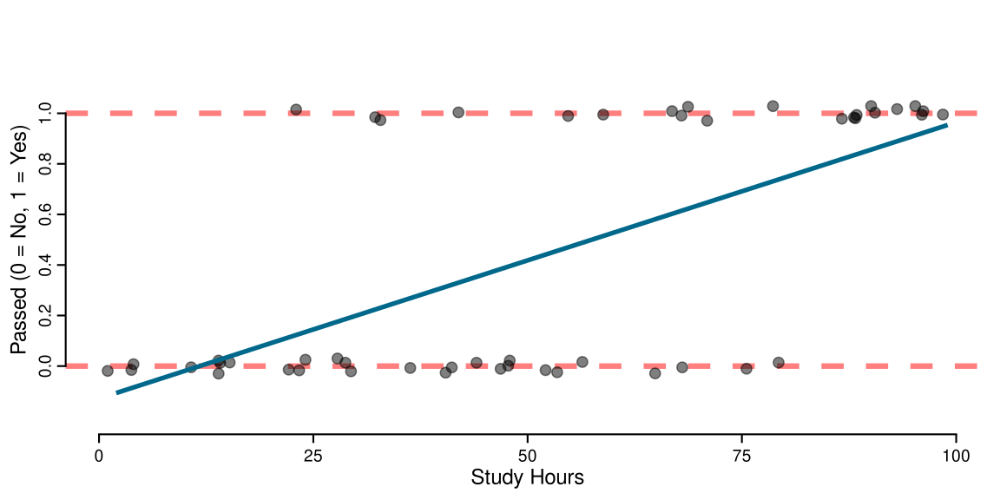
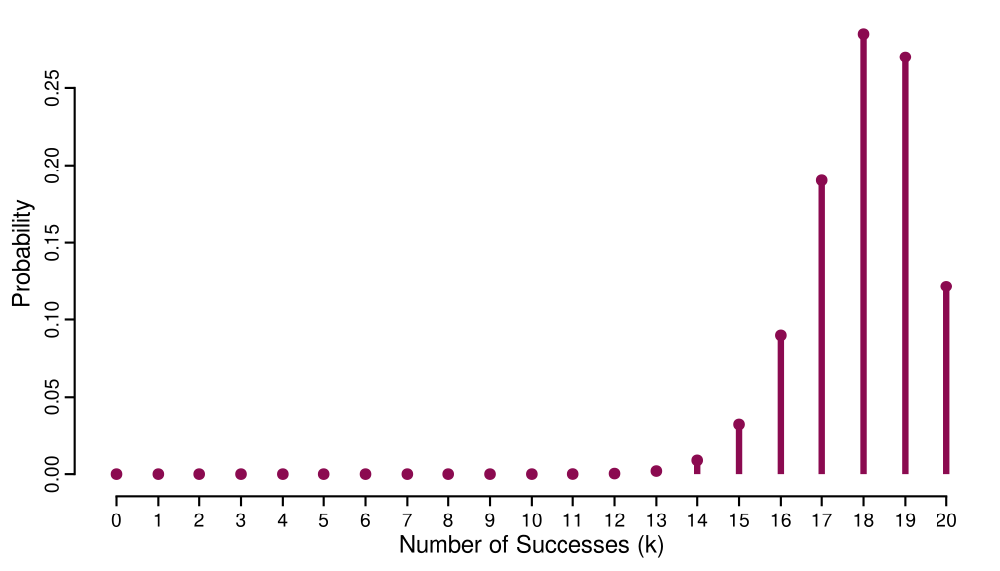
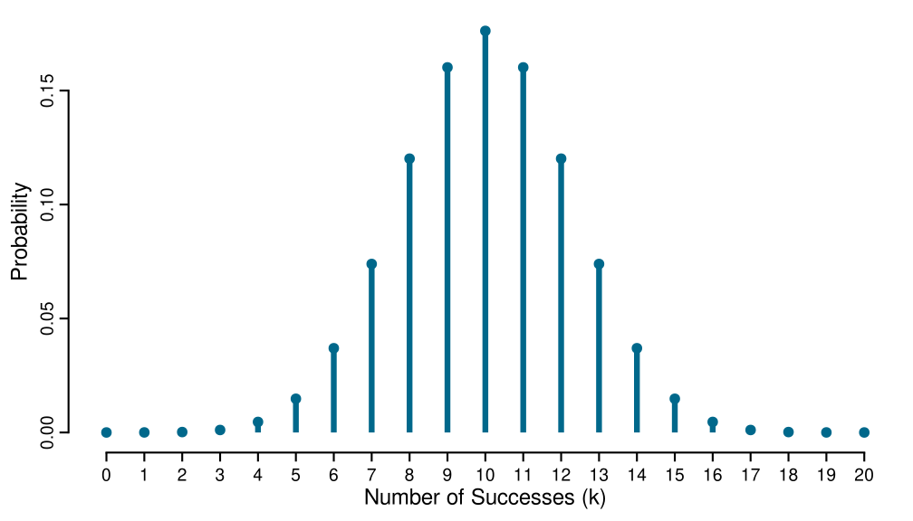
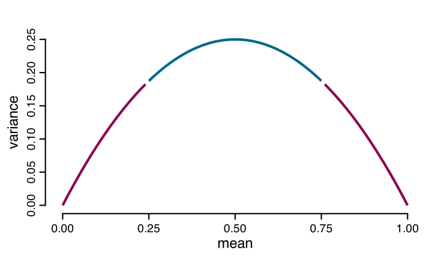
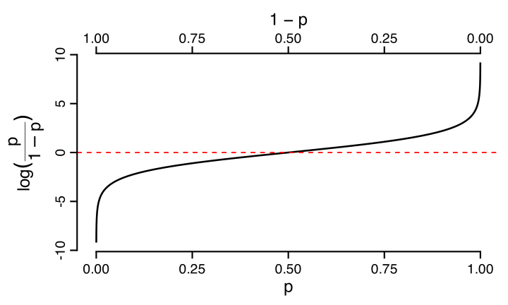
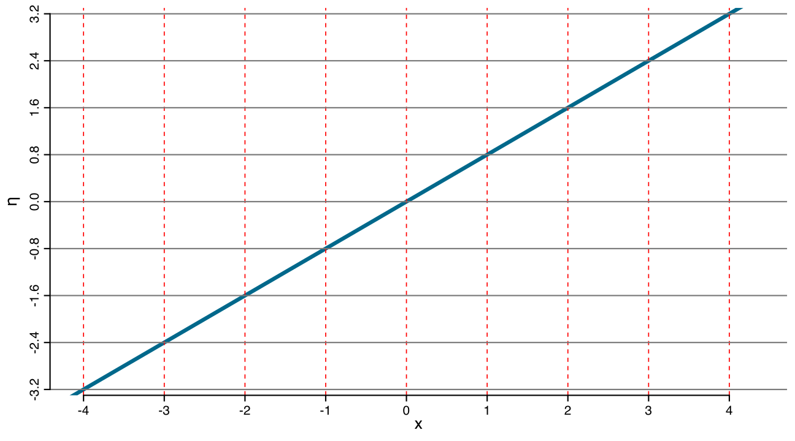
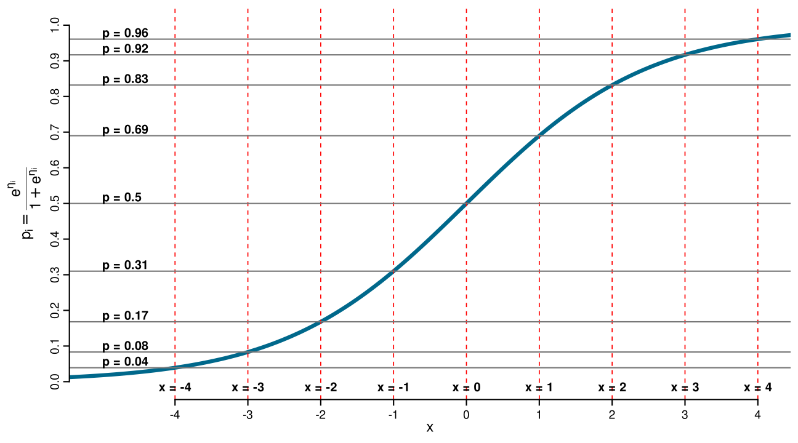

Linear Regression \(y \sim x\)
Linear Regression \(y \sim x\)
Estimate the expected (average) outcome given predictors.
Linear Regression \(y \sim x\)
A constant change in a x leads to a constant change in the y .
Normal Linear Regression \(y \sim x\)
Variation : Characterize how outcomes vary around that expectation.
The Normal distribution
The Normal distribution has parameters \(\mu\) (mean) and \(\sigma^2\) (variance):
\(f(y \mid \mu, \sigma^2) = \frac{1}{\sqrt{2\pi\sigma^2}} \exp\left( - \frac{(y - \mu)^2}{2\sigma^2} \right)\)
The Normal distribution
The Normal distribution has parameters \(\mu\) (mean) and \(\sigma^2\) (variance):
\(f(y \mid \mu, \sigma^2) = \frac{1}{\sqrt{2\pi\sigma^2}} \exp\left( - \frac{(y - \mu)^2}{2\sigma^2} \right)\)
The Normal distribution
The Normal distribution has parameters \(\mu\) (mean) and \(\sigma^2\) (variance):
\(f(y \mid \mu, \sigma^2) = \frac{1}{\sqrt{2\pi\sigma^2}} \exp\left( - \frac{(y - \mu)^2}{2\sigma^2} \right)\)
\[y_i \sim \mathcal{N}(\beta_0 + \beta_1 x_i, \sigma^2)\] Conditional on \(x\) , the variable \(y\) follows a Normal distribution centered at the regression line, with fixed spread (\(\sigma^2\) )
\[y \sim \mathcal{N}(\mu, \sigma^2)\]
Support : \((-\infty, +\infty)\) Mean (expected value): \(\mu\) Variance : \(\sigma^2\) Independence: \(\mu\) and \(\sigma^2\) are separate; changing the mean does not change the variance!
Why do these matter for regression?
When building a model, we need to know:
Support : what range of values is possibleMean (expected value): what value to predict on averageVariance : how much variation around the meanMean–variance relationship : does variance change with the mean?
Where the Normal model breaks down
Reaction Times
Where the Normal model breaks down
Exam pass/fail
Where the Normal model breaks down
Number of errors in a task
Probability distributions
A probability distribution of a random variable \(Y\) describes the probabilities assigned to each possible value \(y\) , given certain parameters values.
For a normally distributed random varible…
\[f(y \mid \mu, \sigma^2) = \frac{1}{\sqrt{2\pi\sigma^2}} \exp\left( - \frac{(y - \mu)^2}{2\sigma^2} \right)\]
Parameters and variables
Any probability function has parameters and variables :
\[f(y \mid \boldsymbol{\theta})\]
\(y\) is a specific observed value\(\boldsymbol{\theta}\) is a vector of parameters that define the distribution’s shape\(f(\cdot)\) is the function itself
Normal : \(f(y \text{ | } \mu,\sigma^2)\) \(y \in \mathbb{R}\) \(\mu\) \(\sigma^2\)
Gamma : \(f(y \text{ | } \alpha,\beta)\) \(y \in (0,\infty)\) \(\alpha/\beta\) \(\alpha/\beta^2\)
Binomial : \(f(y \text{ | } n,p)\) \(y \in \{0,1,\dots,n\}\) \(np\) \(np(1-p)\)
Poisson : \(f(y \text{ | } \lambda)\) \(y \in \{0,1,2,\dots\}\) \(\lambda\) \(\lambda\)
Generalized Linear Models (GLMs)
Right distribution : Match the outcome’s support
Mean-dependent variance : Variance changes with the mean, not constant
Link function : Transform the mean \(\rightarrow\) Ensures predictions respect the outcome’s constraints
Example: Passing the exam
Does studying more increase the probability of passing?
Fitting a Normal Linear Model
<- lm (passed ~ study_hours, data = dat_exam)

Fitting a Generalized Linear Model
<- glm (passed ~ study_hours, data = dat_exam, family = binomial (link = "logit" ))
Generalized Linear Models (GLM)
The three ingredients of a GLM
Random Component : Choose a distribution
Systematic Component : Linear predictor
\(\eta_i = \beta_0 + \beta_1 x_i + …\)
Link Function : Connect mean to predictor
\(g(\mu_i) = \eta_i\)
1. Random Component
The random component specifies the probability distribution of the outcome \(y\) :
\[
y \sim \text{Distribution}(\text{parameters})
\]
What support does your outcome have?
Binary: \(\{0, 1\}\) → \(\text{Binomial}(n, p)\)
Counts: \(\{0, 1, 2, \ldots\}\) → \(\text{Poisson}(\lambda)\)
Any real number: \((-\infty, \infty)\) → \(\text{Gaussian}(\mu, \sigma)\)
1. Random Component
Choosing a distribution specifies not only the mean, but also how the variance depends on the mean:
\[
\mathrm{Var}(Y \mid \mathbf{X}) = V(\mu),
\qquad \mu = E(Y \mid \mathbf{X}).
\]
Examples :
Normal: \(V(\mu)=\text{constant}\) ;
Binomial: \(V(\mu)=\mu(1-\mu)\) ;
Poisson: \(V(\mu)=\mu\) .
2. Systematic Component
The systematic component is exactly the same as in normal linear regression: we predict a linear combination of predictors.
\[
\eta_i = \beta_0 + \beta_1 x_{1i} + \beta_2 x_{2i} + \cdots + \beta_k x_{ki}
\]
where \(k\) denotes the total number of predictors.
3. Link Function
The link function \(g(\cdot)\) connects the expected value (mean) \(\mu_i\) of the distribution to the linear predictor \(\eta\) :
\[
g(\mu_i) = \eta_i
\]
The linear predictor \(\eta_i\) can be any real number: \((-\infty, +\infty)\)
But \(\mu_i\) (the mean) is constrained by the distribution’s support
The link function transforms \(\mu\) to be unbounded
Common link functions
Normal
\((-\infty, +\infty)\) Identity : \(\text{ }\) \(g(\mu) = \mu\) No transformation
Binomial
\([0, 1]\) Logit : \(g(\mu) = \log\!\left(\frac{\mu}{1-\mu}\right)\) Probability to \(\mathbb{R}\)
Gamma
\((0, \infty)\) Log : \(g(\mu) = \log(\mu)\) Positive to \(\mathbb{R}\)
Putting it together
For example, a Generalized Linear Model with the Gaussian family and identity link could be written as:
\[
\begin{aligned}
y_i &\sim \text{Gaussian}(\mu_i, \sigma) \quad && \text{Random component} \\ \\
g(\mu_i) &= \eta_i \quad && \text{Identity link} \\ \\
\eta_i &= \beta_0 + \beta_1 x_{i1} + \beta_2 x_{i2} \quad && \text{Systematic component}
\end{aligned}
\]
Putting it together
For example, a Generalized Linear Model with the Binomial family and logit link could be written as:
\[
\begin{aligned}
y_i &\sim \text{Binomial}(n, p_i) && \text{Random component} \\ \\
\log\left(\frac{p_i}{1-p_i}\right) &= \eta_i && \text{Logit link} \\ \\
\eta_i &= \beta_0 + \beta_1 x_{i1} + \beta_2 x_{i2} && \text{Systematic component}
\end{aligned}
\]
Binomial Logistic Regression
Bernoulli and Binomial distributions
Number of items correct on a test (out of \(n\) )
Number of people who improve after treatment (out of \(n\) patients)
Accuracy on a task (successes / total trials)
Bernoulli distribution
A single binary trial with two outcomes (success/failure):
\[
P(Y = y \mid p) = p^y(1-p)^{1-y}, \quad y \in \{0, 1\}
\]
where \(p\) is the probability of success.
Mean: \(E(Y) = p\)
Variance: \(\text{Var}(Y) = p(1-p)\)
Flip one coin (heads with probability 0.7)
= rbinom (n = 1 , size = 1 , prob = 0.7 );one
Over 10,000 flips, what’s the estimated probability of heads?
= rbinom (n = 100000 , size = 1 , prob = 0.7 ); head (many)
# Mean: E(Y) = p = mean (many); p
# Variance: Var(Y) = p(1-p) * (1 - p)
Binomial distribution
The probability of getting exactly k successes in n independent Bernoulli trials:
\[
P(Y = k \mid n, p) = \binom{n}{k} p^k (1-p)^{n-k}, \quad k \in \{0, 1, \ldots, n\}.
\]
Mean: \(E(Y) = np\)
Variance: \(\text{Var}(Y) = np(1-p)\)
Flip one coin 10 times
How many heads you get?
= 10 ; p = 0.7 rbinom (n = 1 , size = n, prob = 0.7 )
Over 10,000 repetition …
= rbinom (n = 100000 , size = n, prob = p); head (many)
* p # Mean count: E(Y) = np
* p* (1 - p) # Variance count: Var(Y) = np(1-p)
mean (many/ n) # Mean proportion = p * (1 - p)/ n # Var(Y/n) = p(1-p)/n (variance of proportion)
Binomial distribution: \(n = 20\) , \(p = 0.9\)

Binomial distribution: \(n = 20\) , \(p = 0.5\)

Mean–variance relationship
\[E[Y] = np \quad \text{and} \quad \mathrm{Var}(Y) = np(1-p)\]

Mean–variance relationship
Variance is not constant! We model both the mean and the variance!
Odds, Logit Link, Odds Ratios
Odds
Let \(\mu = P(\text{Pass}=1)\) . The odds of passing compare “pass” to “fail”:
\[
\text{odds} = \frac{\mu}{1-\mu}.
\]
If \(\mu=0.80\) , then \(\text{odds}=\frac{0.80}{0.20}=4\) .
So passing is 4-to-1 relative to failing (4 expected passes for 1 fail, on average).
Logit link (log-odds)
The logit link takes probabilities \((0,1)\) to the real line:
\[
\eta_i = \log\!\left(\frac{\mu_i}{1-\mu_i}\right).
\]
In a logistic regression we assume the log-odds are linear in predictors:
\[
\eta_i = \beta_0 + \beta_1 x_i.
\]
Linear on log-odds
A +1 increase in \(x\) changes \(\eta\) by a constant amount: \(\eta(x+1)-\eta(x)=\beta_1\) . (So equal increases in \(x\) correspond to equal increases in log-odds.)

Inverse link (back to probability)
To go back to probability we apply the inverse-logit:
\[
\mu_i = \frac{e^{\eta_i}}{1+e^{\eta_i}}.
\]
Not linear in probability
Equal increases in \(x\) generally do not correspond to equal increases in \(\mu\) , because \(\mu=\text{logit}^{-1}(\eta)\) is nonlinear.

Odds ratios
From the model \(\eta_i=\beta_0+\beta_1 x_i\) , the odds are
\[
\frac{\mu_i}{1-\mu_i}=\exp(\beta_0+\beta_1 x_i).
\]
The odds of passing when study hours \(x = 0\) is \(\exp(\beta_0)\)
The odds of passing when study hours \(x = 1\) is\[\exp(\beta_0 + \beta_1) = \exp(\beta_0) \exp(\beta_1)\]
Odds Ratios
Then the ratio of these two odds is:
\[\frac{\exp(\beta_0)\exp(\beta_1)}{\exp(\beta_0)} = \exp(\beta_1)\]
This means that the odds of passing when increasing study hours by 1 is \(\exp(\beta_1)\) times greater than at the baseline (i.e., when \(x = 0\) ).
If we increase \(x\) by 1 unit, the odds ratio is
\[
\text{OR}=\frac{\text{odds}(x+1)}{\text{odds}(x)}=\exp(\beta_1).
\]
So each +1 unit in study hours multiplies the odds of passing by \(\exp(\beta_1)\) .
Numerical example (\(\beta_1=0.8\) )
Here \(\exp(0.8)\approx 2.23\) , so each +1 hour multiplies the odds by ~2.23.
0.10
0.11
0.25
0.20
+0.10
0.20
0.25
0.55
0.36
+0.16
0.36
0.55
1.22
0.55
+0.20
0.55
1.22
2.73
0.73
+0.18
0.73
2.73
6.07
0.86
+0.13
0.86
6.07
13.51
0.93
+0.07
![]()